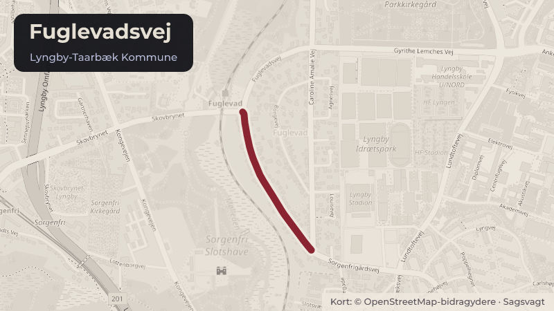

Besluttet 21. maj, Kommunalbestyrelsen, Lyngby-Taarbæk
Cykelsti på Fuglevadsvej og Gyrithe Lemches Vej
Trafik og cyklerBudget og økonomi

Kort fortalt
- Hvem
- Kommunalbestyrelsen, Lyngby-Taarbæk Kommune
- Hvornår
- Torsdag 21. maj 2026
- Status
- Besluttet. Økonomiudvalgets anbefaling godkendt idet den endelige løsning for parkering og cykelsti forelægges til behandling i Teknik- og Miljøudvalget inden iværksættelse.Beslutningen er forkortet her. Læs hele beslutningen
- Næste skridt
- Hvis Kommunalbestyrelsen beslutter, at cykelstiprojektet på Fuglevadsvej og Gyrithe Lemches Vej skal gennemføres, vil forvaltningen underskrive tilsagnet fra Vejdirektoratets Cykelpulje og sætte gang i at cykelstiprojektet gennemføres.
Er noget forkert her? Skriv til os
Læs hele sagen Kommunens egen tekst
Indstilling
Forvaltningen foreslår, at der gives en anlægsbevilling på 5 mio. kr. i 2026-27 til at anlægge en
cykelsti på dele af Fuglevadvej og Gyrithe Lemches Vej. Anlægsbevillingen finansieres af hhv.
en indtægtsbevilling på anlæg på 2,5 mio. kr. i 2027-28 til støtte fra Vejdirektoratets Cykelpulje
samt 2,5 mio. kr. fra driftspuljen til parkerings- og trafiksikkerhedsmæssige tiltag, fordelt ligeligt
mellem 2026-28.
Problemstilling
Den 20. juni 2024 besluttede kommunalbestyrelsen handlingsplanen for den kommunale
cykelstrategi. Handlingsplanen indeholder 37 projekter som alle har til formål at understøtte
kommunens vision om at det skal være attraktivt og trygt for alle at cykle i Lyngby-Taarbæk
Kommune, for at styrke en grøn, sund og trængselsreducerende transportform. Projektet på
Gyrithe Lemches Vej og Fuglevadsvej er et af disse projekter. Lyngby-Taarbæk Kommune
ansøgte i foråret 2025 Vejdirektoratets Cykelpulje om tilskud til at anlægge cykelsti i begge
sider af vejen på dele af Fuglevadsvej og Gyrithe Lemches Vej. Strækningen er ca. 530 meter
lang og er udpeget som et missing link i kommunens cykelstrategi og tilhørende handlingsplan.
I dag er der ingen cykelsti på Fuglevadsvej og en 1,3 meter bred cykelbane på Fuglevadsvej
på strækningen hvor cykelstien ender og krydset ved Caroline Amalie Vej. Strækningen
benyttes blandt andre i dag af cyklister som skal mellem Maskinmesterskolen og DTU til
Basecamp. Derudover er strækningen en skolevej. Formålet med dette projekt er at fjerne
dette missing link i det samlede kommunale cykelstinet og på den måde gøre det mere
attraktivt og sikkert at cykle for børn, unge og øvrige cyklister som til dagligt færdes på disse
veje. Den 7. oktober modtog Lyngby-Taarbæk Kommune tilsagn på 2,5 mio. kr. fra
Vejdirektoratets Cykelpulje til at gennemføre projektet. Det forudsættes, at kommunens
egenfinansiering udgør minimum 50% af det samlede projekt.
Løsninger
For at anlægge cykelsti på dele af Fuglevadsvej og Gyrithe Lemches Vej skal vejen
omprofileres. På Fuglevadsvej indsnævres kørebanebredden til 6 meter, fortov indsnævres til
1,25 meter og yderrabat indsnævres til 0,2 meter for at få plads til en cykelsti i hver side af
vejen på 1,8 meter. Cykelstien opnår dermed den vejledende normalbredde for en ensrettet
cykelsti i hver side af vejen. De enkeltrettede cykelstier anlægges i asfalt og adskilles af en
kantsten mod kørebane og fortov. På Gyrithe Lemches Vej indsnævres fortovet til 1,5 meter og
yderrabatter indsnævres til 0,2 meter for at få plads til en cykelsti i hver side af vejen på 1,8
meter. Som bilag til denne sag vedlægges den eksisterende tværprofil på de to veje og den
påtænkte nye tværprofil hvor der indrettes cykelsti. Projektet skal senest være gennemført d.
31. december 2029 for at der kan opnås tilskud fra Vejdirektoratets Cykelpulje.
Fuglevadsvejs vejklasse er en primær trafikvej. Primære trafikveje i kommunen planlægges
som udgangspunkt med cykelsti som en del af vejprofilet. På Fuglevadsvej benytter nogle
parkanter i dag muligheden for at parkere på vejen da der i dag ikke er en cykelsti. Ved at
gennemføre dette projekt vil det ikke længere være muligt at foretage kantstensparkering på
den del af vejen som er omfattet af cykelstiprojektet. Lykkens Gave har en tilhørende
parkeringsplads som støder op til Fuglevadsvej. Det planlægges at cykelsti og fortov ligges ind
bag denne parkeringsplads af hensyn til trafiksikkerheden, så parkerede biler ikke skal kryds
fortov og cykelsti og så det forsat vil være muligt at benytte disse parkeringspladser (behandlet
af Teknikudvalget juni 2024). I krydset Gyrithe Lemches Vej/Caroline Amalie Vej/Fuglevadsvej
vil der ligeledes blevet set på om der skal ske ændringer af hensyn til trafiksikkerheden, der
planlægges ikke yderligere ændringer på Caroline Amalie Vej. Forvaltningen planlægger at
sende projektet i høring hos de berørte grundejerforeninger og eventuelt afholde et
borgermøde om projektet. Cykelstiprojekt på Gyrithe Lemches Vej og Fuglevadsvej vil blive
koordineret med de tilstødende grundejere og de igangværende projekter på de to veje,
herunder med Lykkens Gave.
På Gyrithe Lemches Vej er det i dag også muligt at parkere på vejen samt på en
parkeringsplads syd for Lyngby Parkkirkegård. En gennemførsel af cykelstiprojektet vil ikke
påvirke disse muligheder for parkering da begge parkeringsmuligheder ligger øst for
projektgrænsen.
Strategisk ramme
Projektet er afledt af kommunens cykelstrategi og tilhørende handlingsplan. Visionen for
strategien er at det skal være attraktivt og trygt for alle at cykle i Lyngby-Taarbæk Kommune,
for at styrke en grøn, sund og trængselsreducerende transportform.
Videre proces
Hvis Kommunalbestyrelsen beslutter, at cykelstiprojektet på Fuglevadsvej og Gyrithe Lemches
Vej skal gennemføres, vil forvaltningen underskrive tilsagnet fra Vejdirektoratets Cykelpulje og
sætte gang i at cykelstiprojektet gennemføres.
Hvis Kommunalbestyrelsen beslutter, at cykelstiprojektet ikke skal gennemføres, vil
forvaltningen meddele Vejdirektoratet, at vi desværre må takke nej til den opnåede støtte fra
cykelpuljen, eller alternativt gå i dialog med Vejdirektoratet om tilskuddet kan rykkes længere
ud i fremtiden til planperioden, så Kommunalbestyrelsen senere kan tage stilling til om der kan
findes plads i budgettet til at finde egenfinansiering til dets gennemførsel.
Økonomi
Den samlede udgift til etablering af cykelstien er 5 mio. kr. Vejdirektoratet har givet tilsagn på,
at de vil finansiere 50 % af projektet svarende til 2,5 mio. kr. Det foreslås, at de resterende 2,5
mio. kr. finansieres af driftspuljen "parkerings- og trafiksikkerhedsmæssige tiltag" i 2026-2028.
Driftspuljen til parkerings- og trafiksikkerhedsmæssige tiltag er på 2,8 mio. kr. årligt, hvoraf 1,2
mio. kr. er disponeret. Hvis sagen godkendes er der fortsat 0,8 mio. kr. til prioritering i hhv.
Det foreslås samlet, at der gives en anlægsbevilling på 5 mio. kr. i 2026-27 til at anlægge en
cykelsti på dele af Fuglevadvej og Gyrithe Lemches Vej. Anlægsbevillingen finansieres af hhv.
en indtægtsbevilling på anlæg på 2,5 mio. kr. i 2027-28 til støtte fra Vejdirektoratets Cykelpulje
samt 2,5 mio. kr. fra driftspuljen til parkerings- og trafiksikkerhedsmæssige tiltag, fordelt ligeligt
mellem 2026-28.
Ved godkendelse af anlægsbevillingen vil det samtidig blive godkendt, at projektet følger den
"mindre omfattende model" jf. anlægsstyringsreglerne, dvs. anlægsprojektet forelægges ikke
igen til politisk stillingtagen. Forvaltningen vurderer således, at projektet i forhold til valg af
materialer o.l. er ukompliceret.
t. kr. i 2026 p/l
Udvalg /
Aktivitetsområde
Cykelsti på
Fuglevadsvej og Gyrithe Økonomiudvalget /
Lemches Vej - udgifter anlæg
(Nyt anlægsprojekt)
Cykelsti på
Fuglevadsvej og Gyrithe
Lemches Vej - Indtægt Økonomiudvalget /
fra Vejdirektoratets
anlæg
Cykelpulje (Nyt
anlægsprojekt)
ja/nej
nej
nej
Driftspuljen til
parkerings- og
Trafik- og
trafiksikkerhedsmæssige Miljøudvalget / Trafik
tiltag
nej
I alt
Beslutningskompetence
Teknik- og Miljøudvalget anbefaler.
Økonomiudvalget anbefaler.
Kommunalbestyrelsen beslutter.
Beslutningsforløb
Beslutning fra Teknik- og Miljøudvalget 2026-2029, den 5. maj 2026, punkt 7:
Ændringsforslag fra Radikale Venstre:
Cykelstien skal løbe langs med vejen, dvs. der ikke laves indhak for at placere p-pladser
mellem vej og cykelsti ved Lykkens Gave.
Afstemning om ændringsforslaget:
For stemte: 3 (F (1), B (1) og Ø (1)).
Imod stemte: 4 (C (4)).
Dermed faldt ændringsforslaget.
Herefter stemtes om forvaltningens indstilling:
For stemte 4 (C (4)).
Undlod at stemme: 3 (F (1), B (1) og Ø(1)).
Hermed anbefalet.
Beslutning fra Økonomiudvalget 2026-2029, den 13. maj 2026, punkt 11:
Økonomiudvalget anbefaler anlægsbevillingen.
Radikale Venstre tager forbehold.
Beslutning
Økonomiudvalgets anbefaling godkendt idet den endelige løsning for parkering og cykelsti
forelægges til behandling i Teknik- og Miljøudvalget inden iværksættelse.
Inge Duus (F) var fraværende, i stedet deltog Silas Mudoh (F).
Mark Nathansen (B) var fraværende, i stedet deltog Susanne Hjernøe (B).
Kilde: Lyngby-Taarbæk Kommune, Kommunalbestyrelsen, referat fra mødet torsdag 21. maj 2026, punkt 8. Læs den originale sag hos kommunen.
Bydele i sagen: Taarbæk
Steder i sagen: Fuglevadsvej · Gyrithe Lemches Vej